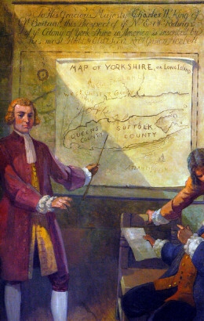
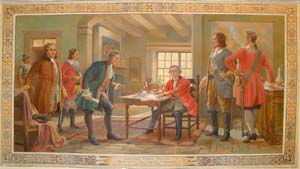

Thomas Dongan
Thomas Dongan was the first royal governor of New York. Although he may not have spent more than a night in Albany, his interest and patronage were critical to the formation and initial development of the city of Albany. He still is celebrated locally and beyond as Albany's first great Irish politician.
 As most of his life is beyond the scope of our active concern, briefly, Dongan was born in County Kildare, Ireland in 1634. He was the son of a member of the Irish Parliament and went with his family into exile in France following the overthrown of King Charles I. There he joined a French regiment and, by 1674, had risen to the rank of Colonel. He returned to England in 1678 and was favored with military and governmental appointments through the agency of James Stuart - formerly a fellow officer in France and the brother of King Charles II.
Stuart also was the Duke of York and sent Colonel Dongan to America in 1682 to serve as governor of his province of New York. Dongan was granted tracts of land on Staten Island, where he later built a mansion, and elsewhere in New York colony.
As proprietary and then royal governor of New York, Dongan played a key role in the settlement of Albany County which he first authorized in 1683. That same year, he set up New York's first representative assembly; granted the Van Rensselaers a royal patent in 1684; established New York and Albany as cities in 1686; and proved to be an able provincial leader until he was replaced when King James was removed from the throne later in the decade.
After his years as governor, Dongan then fell back on his Staten Island estate called "Castletowne." Perhaps he never married. He is said to have returned to England in 1691. On the death of his brother in 1698, he succeeded to the title of "Earl of Limerick". Still plagued by family debt, Dongan was poor when he died in London in December 1715 at the age of eighty-two.
As New York's last proprietary and first royal governor, Thomas Dongan literally put Albany on the colonial map by granting the community with about 500 residents a city charter. He is remembered today in many ways including the naming of a cross street in the old city in his honor.
However, his so-called visits to Albany beginning in 1683 are noted in a number of expositions. A number of the provincial governors came upriver (sometimes even annually) to deliver presents and otherwise "negotiate" with the Indians whom royal authorities valued as allies against the French. We hope to e able to document any visit Dongan made to Albany.
Portrait: We have found no authentic (that means done
by an artist who actually met the subject) likeness of Thomas Dongan.
Additionally, bloody little descriptive material exists to inspire any
memorial paintings. This engraving
probably based on a reminiscent drawing is most often seen in print
and other media. I'm guessing that it is a 19th century rendering. Phelan's
biography notes that it is in the collection of the New-York Historical
Society and was found in his home on Staten Island. However, I no longer
can bring myself to use it. The scenario
shown here represents Dongan the creator of counties and cities.
Its history is not clear but it appears to part of a larger mural presentation
at the Nassau County legislative
building at Mineola, Long Island. 
{kind=link}